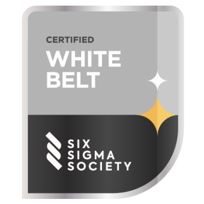
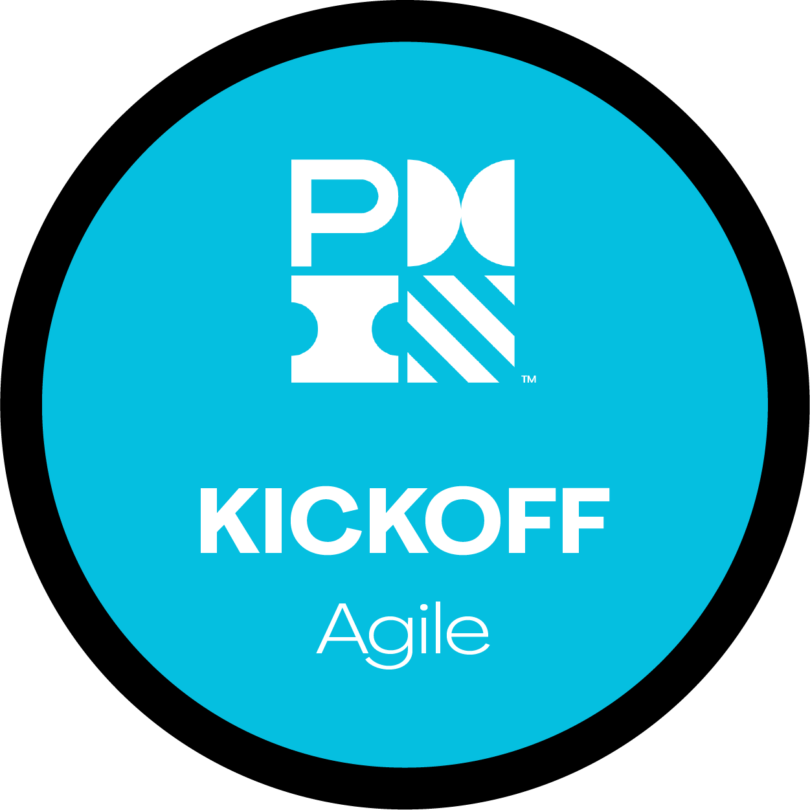
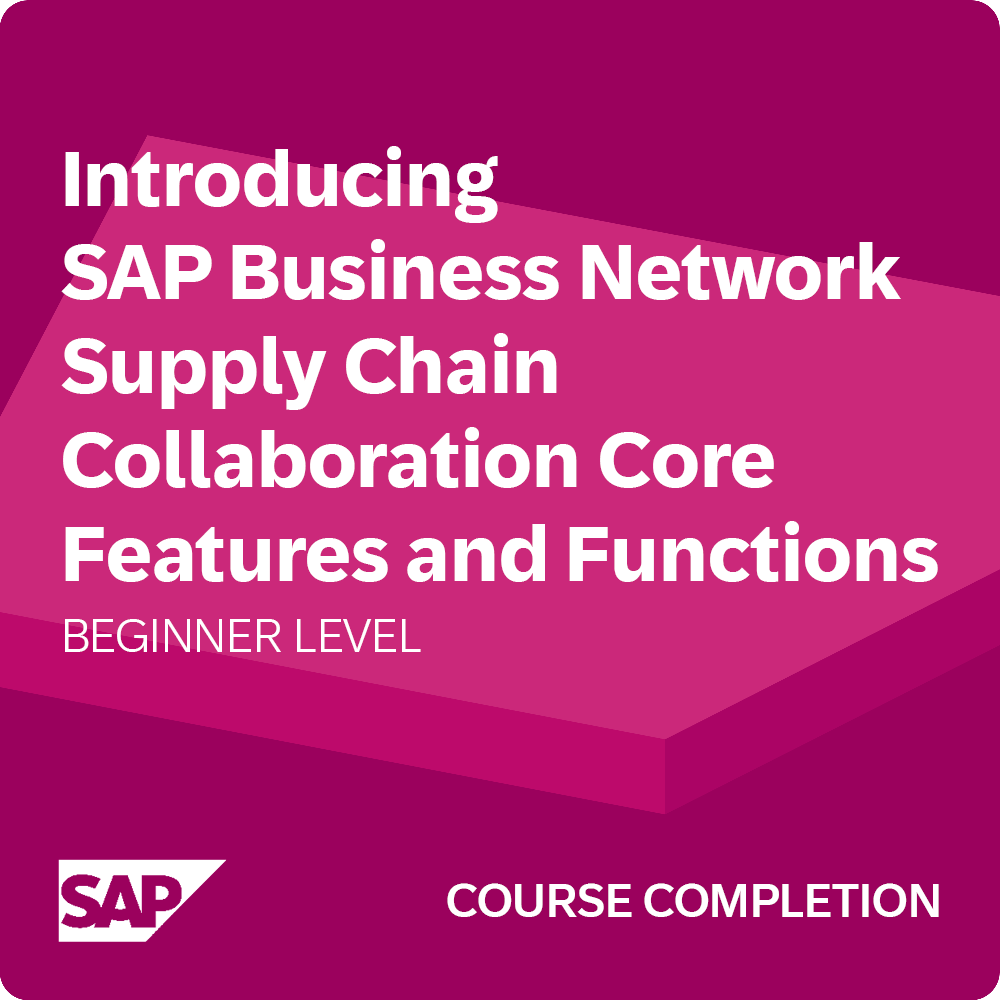
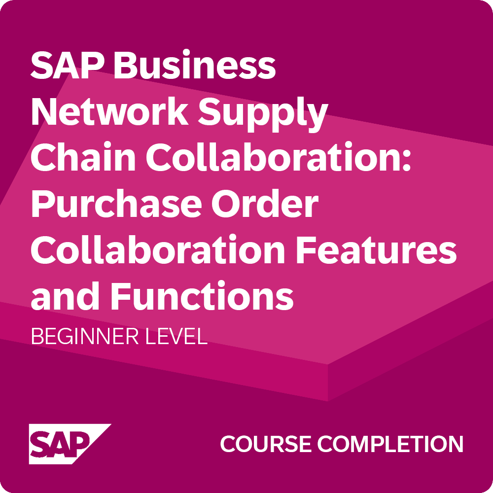

What I work with
Skills
SAP ERP (PP · MM)
Production planning, inventory tracking, material procurement and logistics coordination
WMS · LVS (DE)
Warehouse management systems, inbound/outbound logistics, inventory accuracy
MS Office Suite
Excel dashboards, reports, PowerPoint presentations, Outlook, Teams
Lean · Kaizen · 5S
Value Stream Mapping, GEMBA, FIFO, continuous improvement methodologies
Project Management
Jira, Scrum, structured scheduling and cross-team coordination
CAD · Design
Autodesk Inventor, AutoCAD, PTC Creo — 2D drafting & 3D modelling
Certifications & Training

Six Sigma White Belt
Certified
Lean Leadership Training — Audi Akademie
Hands-on program with a live production simulation applying Toyota Way principles: waste elimination, Value Stream Mapping, and process redesign, alongside team-based problem-solving.
Toyota Production System — NPTEL (IIT Roorkee)
8-week certified course on Toyota Production System fundamentals — waste elimination, Just-in-Time, and Jidoka principles — completed with an Elite certification rating.

PMI Kickoff — Basics of Project Management
Agile & Predictive · Project Management Institute. Foundational program covering core project management approaches across both adaptive and plan-based methodologies.

SAP Business Network — Supply Chain Collaboration
Beginner · Course Completion · SAP. Covers core features and functions for improving collaboration, visibility, and control in complex supply chains — including end-to-end supply chain visibility, enhanced responsiveness, and operational efficiency through SAP integration.

SAP Business Network — Purchase Order Collaboration
Beginner · Course Completion · SAP. Covers Purchase Order processing workflows using SAP Business Network, SAP Ariba, and SAP Fiori — including order confirmation, advance ship notices, goods receipt, invoicing, and supply chain monitor for deviation approvals. Practical exposure to core procurement and purchasing operations.
Languages
🇬🇧 English C1 · Business Fluent
🇩🇪 German B1 · Intermediate
🇮🇳 Marathi & Hindi Native